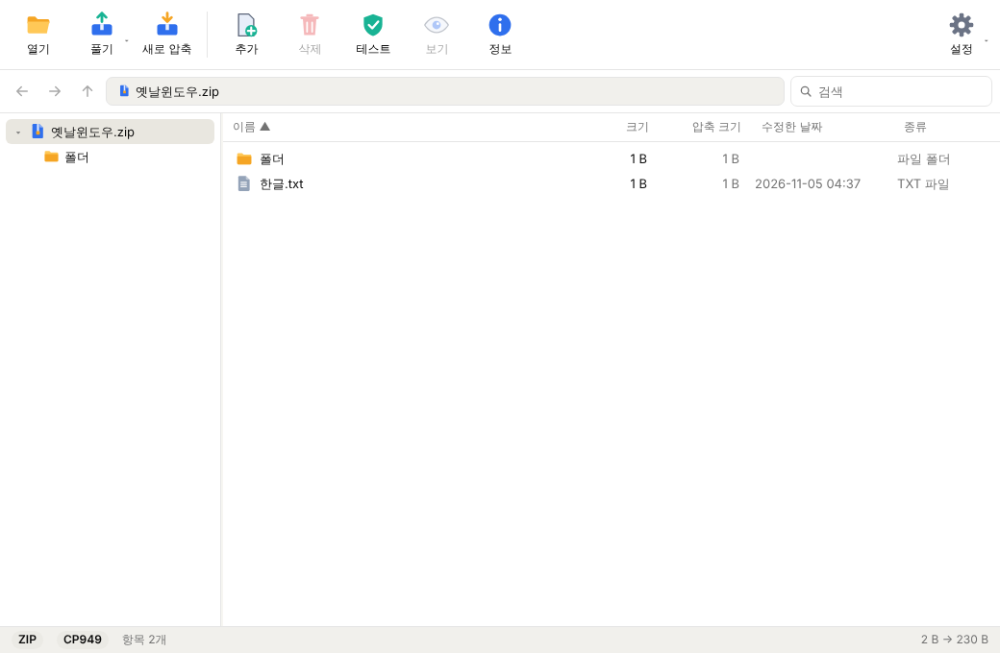
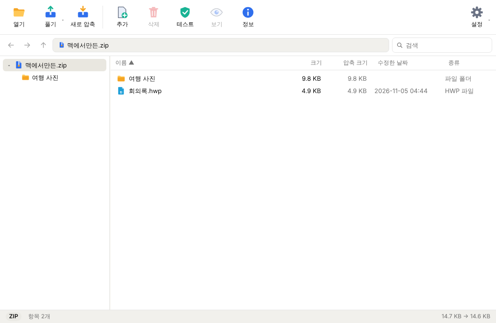
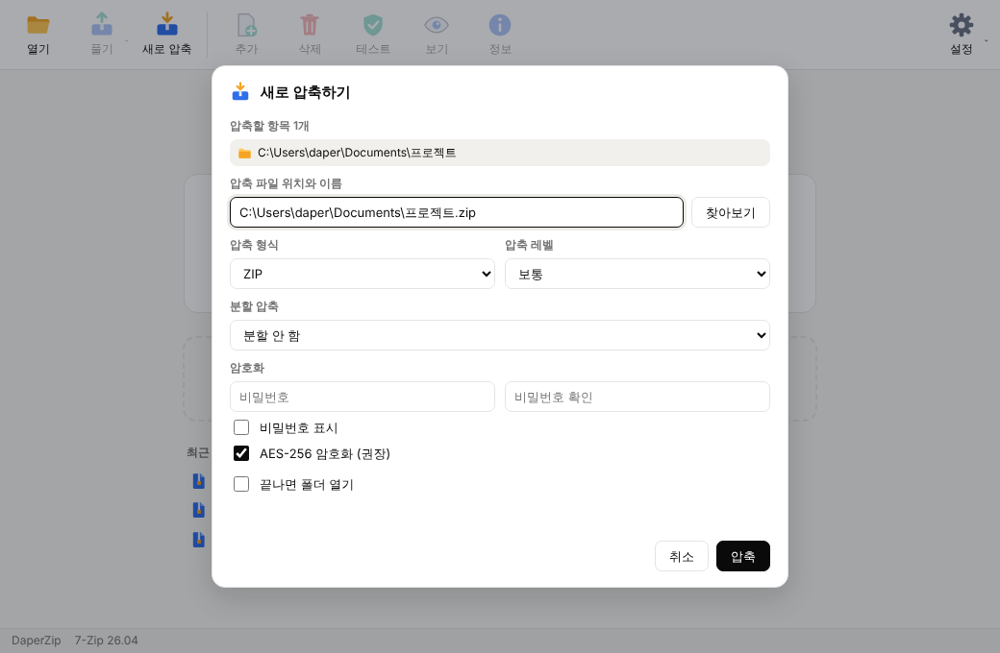
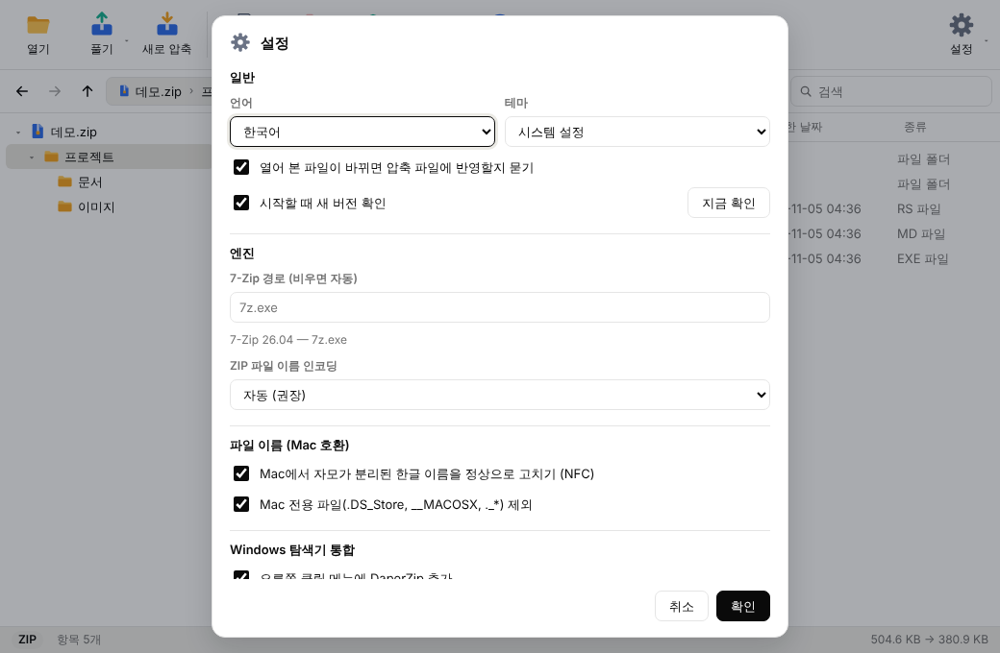

대부분의 압축 형식
ZIP, 7Z, RAR, TAR, GZ, XZ, ISO, CAB, WIM, LZH 등 7-Zip이 읽는 형식을 열고 풉니다.
ZIP, 7Z, RAR, TAR, GZ, XZ, ISO, CAB, WIM, LZH 등 7-Zip이 읽는 형식을 열고 풉니다.
항목이 하나면 그 자리에, 여러 개면 압축 파일 이름의 폴더를 만들어 풉니다.
Windows 탐색기에서 바로 풀고 압축합니다. 여러 파일을 골라도 한 번에 처리합니다.
Mac에서 만든 압축 파일의 자모 분리, 옛 Windows(CP949) ZIP의 깨진 이름을 자동으로 바로잡습니다.
ZIP AES-256, 7Z 파일 이름 암호화, CD · 4GB 단위 분할 압축을 지원합니다.
파일 추가 · 삭제 · 이름 바꾸기, 끌어다 놓기, 압축 파일 안의 파일을 열어 고치면 다시 반영합니다.




Windows 10 / 11 · x64
10.15+ · Apple Silicon / Intel
x64 · deb / AppImage
설치 프로그램에서 "나만 사용"(관리자 권한 불필요) 또는 "모든 사용자"를 고를 수 있습니다. 설치하면 탐색기 오른쪽 클릭 메뉴가 추가됩니다. Windows 11에서는 "추가 옵션 표시" 안에 있습니다.
현재 코드 서명이 없어 "Windows의 PC 보호" 창이 나올 수 있습니다. "추가 정보" → "실행"을 누르세요. 소스는 모두 공개돼 있고 릴리스는 GitHub Actions에서 빌드되며, 릴리스 페이지의 SHA256SUMS로 파일을 검증할 수 있습니다.
dmg를 열고 DaperZip을 응용 프로그램 폴더로 끌어 놓으세요.
처음 실행할 때 경고가 나오면 Finder에서 DaperZip을 오른쪽 클릭 → "열기"를 누르세요.
Debian · Ubuntu 계열은 .deb를 설치하세요. 그 밖의 배포판은 AppImage에 실행 권한을 주고 실행합니다.
chmod +x DaperZip_*.AppImage네. DaperZip은 완전 무료이고 MIT 라이선스 오픈소스입니다. 소스 코드는 GitHub에서 누구나 볼 수 있습니다.
압축 처리는 7-Zip 엔진이 담당하고, DaperZip은 그 위에 한글 파일 이름 자동 복구, 스마트 풀기, 압축 파일 안에서 바로 편집, 탐색기 오른쪽 클릭 메뉴 같은 사용 편의 기능을 얹은 별개의 프로젝트입니다.
네, RAR을 열고 풀 수 있습니다. 다만 RAR 형식으로 새로 압축하는 기능은 없습니다. 새로 만들 때는 ZIP, 7Z, TAR 계열, WIM을 고를 수 있습니다.
DaperZip은 Mac에서 만든 압축 파일의 자모 분리와 옛 Windows(CP949) ZIP의 깨진 이름을 자동으로 감지해 고칩니다. 설정에서 ZIP 파일 이름 인코딩을 직접 고를 수도 있습니다.
현재 코드 서명이 없어서 Windows와 macOS가 처음 실행할 때 경고를 보여 줍니다. 위 설치 안내의 방법으로 실행할 수 있습니다. 릴리스에는 파일 검증용 SHA256SUMS가 함께 올라갑니다.
아니요. 압축과 해제는 모두 내 컴퓨터에서 처리되고, 파일이나 사용 정보는 어디로도 전송되지 않습니다. 시작할 때 새 버전이 있는지 GitHub에 확인하며, 설정에서 끌 수 있습니다. 자세한 내용은 개인정보 안내를 참고하세요.
Windows 10 / 11(x64), macOS 10.15 이상(Apple Silicon · Intel), Linux x64(deb · AppImage)를 지원합니다.